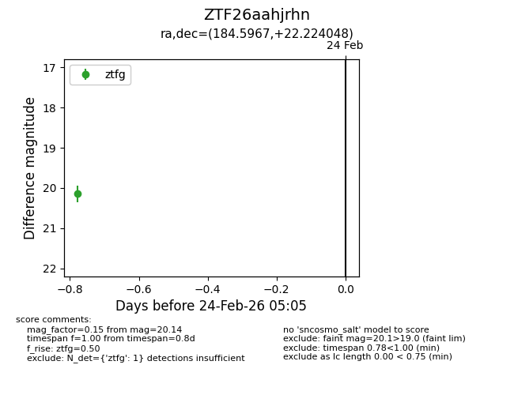
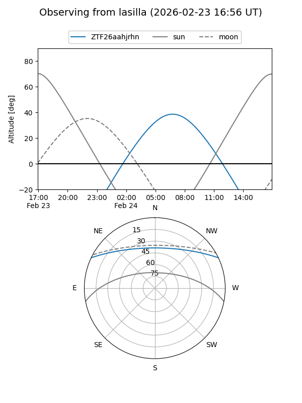
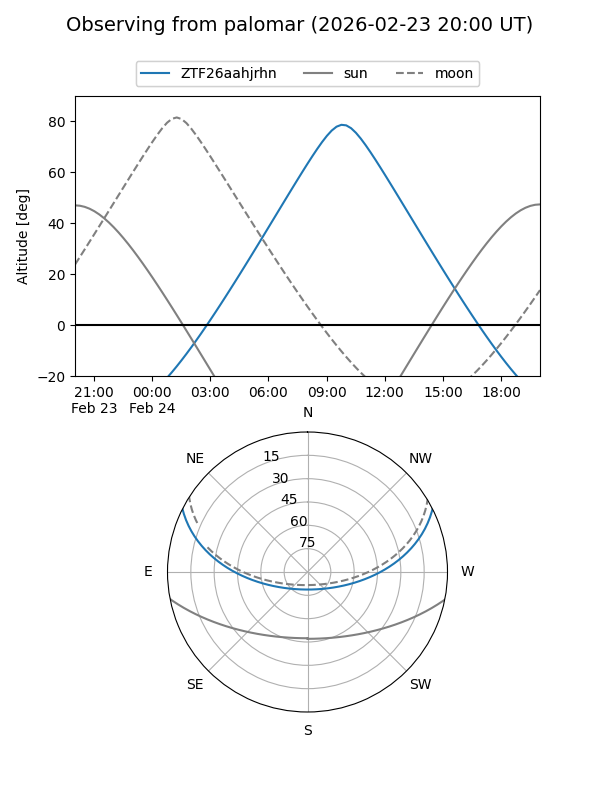

ZTF26aahjrhn
Target ZTF26aahjrhn at 2026-02-24 09:08
Aliases and brokers:
FINK: link
Lasair: link
ALeRCE: link
alt names
ZTF26aahjrhn (ztf,fink_ztf)
Coordinates:
equatorial (ra, dec) = 184.5967,+22.22405
equatorial (HMS+DMS) = 12:18:23.20,+22:13:26.57
galactic (l, b) = (244.3011,+81.03607)
Flags:
Photometry:
last ztfg=20.14
1 ztfg detections
Lightcurve

Visibility


Additional plots